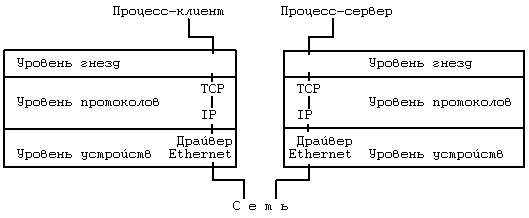
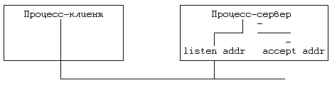

В предыдущем разделе было показано, каким образом взаимодействуют между собой процессы, протекающие на разных машинах, при этом обращалось внимание на то, что способы реализации взаимодействия могут быть различаться в зависимости от используемых протоколов и сетевых средств. Более того, эти способы не всегда применимы для обслуживания взаимодействия процессов, выполняющихся на одной и той же машине, поскольку в них предполагается существование обслуживающего (серверного) процесса, который при выполнении системных функций open или read будет приостанавливаться драйвером. В целях создания более универсальных методов взаимодействия процессов на основе использования многоуровневых сетевых протоколов для системы BSD был разработан механизм, получивший название "sockets" (гнезда) (см. [Berkeley 83]). В данном разделе мы рассмотрим некоторые аспекты применения гнезд (на пользовательском уровне представления).

Рисунок 11.18. Модель с использованием гнезд
Структура ядра имеет три уровня: гнезд, протоколов и устройств (Рисунок 11.18). Уровень гнезд выполняет функции интерфейса между обращениями к операционной системе (системным функциям) и средствами низких уровней, уровень протоколов содержит модули, обеспечивающие взаимодействие процессов (на рисунке упомянуты протоколы TCP и IP), а уровень устройств содержит драйверы, управляющие сетевыми устройствами. Допустимые сочетания протоколов и драйверов указываются при построении системы (в секции конфигурации); этот способ уступает по гибкости вышеупомянутому потоковому механизму. Процессы взаимодействуют между собой по схеме клиент-сервер: сервер ждет сигнала от гнезда, находясь на одном конце дуплексной линии связи, а процессы-клиенты взаимодействуют с сервером через гнездо, находящееся на другом конце, который может располагаться на другой машине. Ядро обеспечивает внутреннюю связь и передает данные от клиента к серверу.
Гнезда, обладающие одинаковыми свойствами, например, опирающиеся на общие соглашения по идентификации и форматы адресов (в протоколах), группируются в домены (управляемые одним узлом). В системе BSD 4.2 поддерживаются домены: "UNIX system" - для взаимодействия процессов внутри одной машины и "Internet" (межсетевой) - для взаимодействия через сеть с помощью протокола DARPA (Управление перспективных исследований и разработок Министерства обороны США) (см. [Postel 80] и [Postel 81]). Гнезда бывают двух типов: виртуальный канал (потоковое гнездо, если пользоваться терминологией Беркли) и дейтаграмма. Виртуальный канал обеспечивает надежную доставку данных с сохранением исходной последовательности. Дейтаграммы не гарантируют надежную доставку с сохранением уникальности и последовательности, но они более экономны в смысле использования ресурсов, поскольку для них не требуются сложные установочные операции; таким образом, дейтаграммы полезны в отдельных случаях взаимодействия. Для каждой допустимой комбинации типа домен-гнездо в системе поддерживается умолчание на используемый протокол. Так, например, для домена "Internet" услуги виртуального канала выполняет протокол транспортной связи (TCP), а функции дейтаграммы - пользовательский дейтаграммный протокол (UDP).
Существует несколько системных функций работы с гнездами. Функция socket устанавливает оконечную точку линии связи.
sd = socket(format,type,protocol);
Format обозначает домен ("UNIX system" или "Internet"), type - тип связи через гнездо (виртуальный канал или дейтаграмма), а protocol - тип протокола, управляющего взаимодействием. Дескриптор гнезда sd, возвращаемый функцией socket, используется другими системными функциями. Закрытие гнезд выполняет функция close.
Функция bind связывает дескриптор гнезда с именем:
bind(sd,address,length);
где sd - дескриптор гнезда, address - адрес структуры, определяющей идентификатор, характерный для данной комбинации домена и протокола (в функции socket). Length - длина структуры address; без этого параметра ядро не знало бы, какова длина структуры, поскольку для разных доменов и протоколов она может быть различной. Например, для домена "UNIX system" структура содержит имя файла. Процессы-серверы связывают гнезда с именами и объявляют о состоявшемся присвоении имен процессам-клиентам.
С помощью системной функции connect делается запрос на подключение к существующему гнезду:
connect(sd,address,length);
Семантический смысл параметров функции остается прежним (см. функцию bind), но address указывает уже на выходное гнездо, образующее противоположный конец линии связи. Оба гнезда должны использовать одни и те же домен и протокол связи, и тогда ядро удостоверит правильность установки линии связи. Если тип гнезда - дейтаграмма, сообщаемый функцией connect ядру адрес будет использоваться в последующих обращениях к функции send через данное гнездо; в момент вызова никаких соединений не производится.
Пока процесс-сервер готовится к приему связи по виртуальному каналу, ядру следует выстроить поступающие запросы в очередь на обслуживание. Максимальная длина очереди задается с помощью системной функции listen:
listen(sd,qlength)
где sd - дескриптор гнезда, а qlength - максимально-допустимое число запросов, ожидающих обработки.

Рисунок 11.19. Прием вызова сервером
Системная функция accept принимает запросы на подключение, поступающие на вход процесса-сервера:
nsd = accept(sd,address,addrlen);
где sd - дескриптор гнезда, address - указатель на пользовательский массив, в котором ядро возвращает адрес подключаемого клиента, addrlen - размер пользовательского массива. По завершении выполнения функции ядро записывает в переменную addrlen размер пространства, фактически занятого массивом. Функция возвращает новый дескриптор гнезда (nsd), отличный от дескриптора sd. Процесс-сервер может продолжать слежение за состоянием объявленного гнезда, поддерживая связь с клиентом по отдельному каналу (Рисунок 11.19).
Функции send и recv выполняют передачу данных через подключенное гнездо. Синтаксис вызова функции send:
count = send(sd,msg,length,flags);
где sd - дескриптор гнезда, msg - указатель на посылаемые данные, length размер данных, count - количество фактически переданных байт. Параметр flags может содержать значение SOF_OOB (послать данные out-of-band - "через таможню"), если посылаемые данные не учитываются в общем информационном обмене между взаимодействующими процессами. Программа удаленной регистрации, например, может послать out-of-band сообщение, имитирующее нажатие на клавиатуре терминала клавиши "delete". Синтаксис вызова системной функции recv:
count = recv(sd,buf,length,flags);
где buf - массив для приема данных, length - ожидаемый объем данных, count количество байт, фактически переданных пользовательской программе. Флаги (flags) могут быть установлены таким образом, что поступившее сообщение после чтения и анализа его содержимого не будет удалено из очереди, или настроены на получение данных out-of-band. В дейтаграммных версиях указанных функций, sendto и recvfrom, в качестве дополнительных параметров указываются адреса. После выполнения подключения к гнездам потокового типа процессы могут вместо функций send и recv использовать функции read и write. Таким образом, согласовав тип протокола, серверы могли бы порождать процессы, работающие только с функциями read и write, словно имеют дело с обычными файлами.
Функция shutdown закрывает гнездовую связь:
shutdown(sd,mode)
где mode указывает, какой из сторон (посылающей, принимающей или обеим вместе) отныне запрещено участие в процессе передачи данных. Функция сообщает используемому протоколу о завершении сеанса сетевого взаимодействия, оставляя, тем не менее, дескрипторы гнезд в неприкосновенности. Освобождается дескриптор гнезда только в результате выполнения функции close.
Системная функция getsockname получает имя гнездовой связи, установленной ранее с помощью функции bind:
getsockname(sd,name,length);
Функции getsockopt и setsockopt получают и устанавливают значения различных связанных с гнездом параметров в соответствии с типом домена и протокола.
Рассмотрим обслуживающую программу, представленную на Рисунке 11.20. Процесс создает в домене "UNIX system" гнездо потокового типа и присваивает ему имя sockname. Затем с помощью функции listen устанавливается длина очереди поступающих сообщений и начинается цикл ожидания поступления запросов. Функция accept приостанавливает свое выполнение до тех пор, пока протоколом не будет зарегистрирован запрос на подключение к гнезду с означенным именем; после этого функция завершается, возвращая поступившему запросу новый дескриптор гнезда. Процесс-сервер порождает потомка, через которого будет поддерживаться связь с процессом-клиентом; родитель и потомок при этом закрывают свои дескрипторы, чтобы они не становились помехой для коммуникационного траффика другого процесса. Процесс-потомок ведет разговор с клиентом и завершается после выхода из функции read. Процесс-сервер возвращается к началу цикла и ждет поступления следующего запроса на подключение.
#include <sys/types.h>
#include <sys/socket.h>
main()
{
int sd,ns;
char buf[256];
struct sockaddr sockaddr;
int fromlen;
sd = socket(AF_UNIX,SOCK_STREAM,0);
/* имя гнезда - не может включать пустой символ */
bind(sd,"sockname",sizeof("sockname") - 1);
listen(sd,1);
for (;;)
{
ns = accept(sd,&sockaddr,&fromlen);
if (fork() == 0)
{
/* потомок */
close(sd);
read(ns,buf,sizeof(buf));
printf("сервер читает '%s'\n",buf);
exit();
}
close(ns);
}
}
|
Рисунок 11.20. Процесс-сервер в домене "UNIX system"
#include <sys/types.h>
#include <sys/socket.h>
main()
{
int sd,ns;
char buf[256];
struct sockaddr sockaddr;
int fromlen;
sd = socket(AF_UNIX,SOCK_STREAM,0);
/* имя в запросе на подключение не может включать
/* пустой символ */
if (connect(sd,"sockname",sizeof("sockname") - 1) == -1)
exit();
write(sd,"hi guy",6);
}
|
Рисунок 11.21. Процесс-клиент в домене "UNIX system"
На Рисунке 11.21 показан пример процесса-клиента, ведущего общение с сервером. Клиент создает гнездо в том же домене, что и сервер, и посылает запрос на подключение к гнезду с именем sockname. В результате подключения процесс-клиент получает виртуальный канал связи с сервером. В рассматриваемом примере клиент передает одно сообщение и завершается.
Если сервер обслуживает процессы в сети, указание о том, что гнездо принадлежит домену "Internet", можно сделать следующим образом:
socket(AF_INET,SOCK_STREAM,0);
и связаться с сетевым адресом, полученным от сервера. В системе BSD имеются библиотечные функции, выполняющие эти действия. Второй параметр вызываемой клиентом функции connect содержит адресную информацию, необходимую для идентификации машины в сети (или адреса маршрутов посылки сообщений через промежуточные машины), а также дополнительную информацию, идентифицирующую приемное гнездо машины-адресата. Если серверу нужно одновременно следить за состоянием сети и выполнением локальных процессов, он использует два гнезда и с помощью функции select определяет, с каким клиентом устанавливается связь в данный момент.
Предыдущая глава || Оглавление || Следующая глава